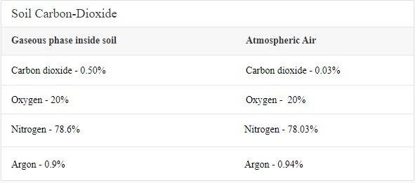

One should know the fact that Human interference to Agriculture is negligible, in other words there is no-need. Human contribution for plant growth will not exceed 5% for its growth and production. About 95% of plant tissues are made up of Carbon, Oxygen and Hydrogen. Carbon and Oxygen is derived from Air during photosynthesis and Hydrogen from soil moisture. Some amount of Organic-Carbon will also be absorbed by soil. Human do greater circus, do maximum investments, will get-into advanced scientific research to cater 5% nutrition. Greater lobby have been carried by MNCs in the name of chemical farming and Organic farming from years just to feed 5% essentials elements.

The above table clearly says the percentage of Carbon dioxide inside soil is about 16 folds higher than atmospheric air. This is due to Root respiration and microbial activity inside soil. If the population of trees and plants reduce in any given location- there will be immense liberation of soil carbon dioxide to atmosphere.
A good soil holds moisture and will have ample air flow. An ideal soil will have 50% macro pores filled with soil air, 50% micro pores filled with soil water and crores of Microbes adhered to root surface of the plants. Earth worms mixes soil in a natural way. Bacteria leaving in the root nodules of legumes such as Beans, grams and ground nuts fixes atmospheric N2 form of Nitrogen to No3 form of Nitrogen and make available to plants. Other soil micro-organisms decompose organic matter, there-by mineralizing more nutrients and actively participating in Nutrient cycles. Micro-organisms upon death and degradation produces Humic-acids, Fulvic-acids and other organic acids which solubilize fixed/unavailable form of Nutrients to Soluble form of nutrients and make available to plants. The soil rich in microbial activity will be the most fertile soil and said to be HUMUS. Humus is brownish-black colour, highly porous, light weight compound formed by microbial activity over years naturally. Since humus is rich in soil air, it provides ample space for root, and microbes will be actively participating in all Nutrient cycles to hasten plant growth and production.
Percentage of Humus in our ancient agriculture systems was about 3.5 to 4%. During the past 50 years due to Industrial agriculture, influence of green revolution, mono-cropping system, heavy usage of machineries and equipment’s and heavy irrigation projects our soil lost its native virginity. Percent organic carbon got depleted day by day by excess use of chemical fertilizers and pesticides, soil became hard pan due to heavy machineries such as tractors and JCBs, production decreased – pest emerged as super bugs by mono-cropping system and due to all these Industrial Agriculture soil lost its fertility and became almost barren now.
Most of the soil across the state will not cross above 0.5%, so there is a need for immediate actions to improve soil health without further damage/loss to environment for this, natural farming is the only solution in the way to forgo.